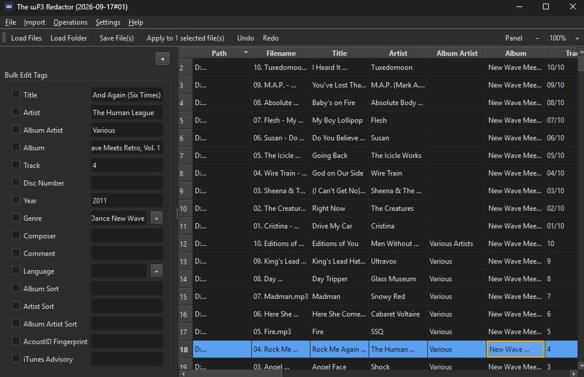

The ɯP3 Redactor
A free Windows utility for bulk-checking and bulk-editing MP3 metadata, mp3tag-inspired.

What it does
Load a folder of MP3s into a sortable table, select any number of them, and run checks or edits across the whole selection at once — the same batch-first workflow as the rest of the Redactor family.
Features
- File integrity check via
mp3val, plus a Deep Check Integrity pass that does a real full decode, catching corrupt or truncated audio a header-only scan can miss. - BPM detection (in-process, via
aubio) and musical key detection (viakeyfinder-cli, run concurrently across files for a large speedup on multi-core machines). - Bulk tag editing — Title/Artist/Album/Track/Year/Genre/Language via a tag panel, undoable, with Genre/Language quick-pick lists and fully manageable columns.
- Measure Loudness — single-pass
loudnormmeasurement written as a standard ReplayGain tag, picked up by any ReplayGain-aware player. - Import & Convert to MP3 — brings FLAC/WAV/OGG/M4A and other formats into the library via
libmp3lameat a chosen bitrate. - Rename / Export Files and Parse Filename → Metadata, pattern-based (
%track% - %artist% - %title%by default) and previewed before committing. - Quick single-file rename by double-clicking a filename, without the full pattern tool.
Requirements
Windows, no separate Python install needed. Deep integrity checks, loudness measurement, and format conversion use ffmpeg; key detection uses a small companion binary from keyfinder-cli-windows (no prebuilt Windows build exists upstream, so it's built and shipped separately). Full details and the changelog are in the GitHub repository.
The rest of the family
The ɯP3 Redactor shares its UI and core editing patterns with three sibling tools, via redactor_common:
 The ƆBZ Redactor
The ƆBZ Redactor The ƎPUB Redactor
The ƎPUB Redactor The Ʌideo Redactor
The Ʌideo Redactor